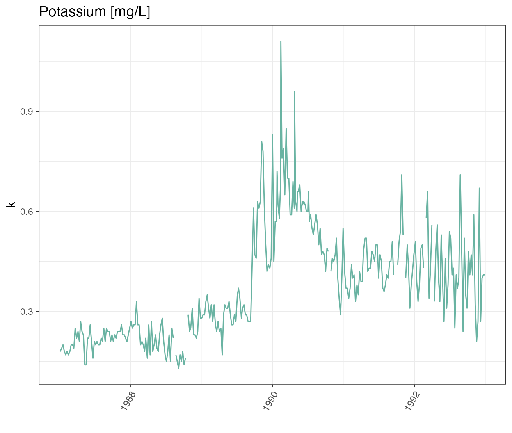
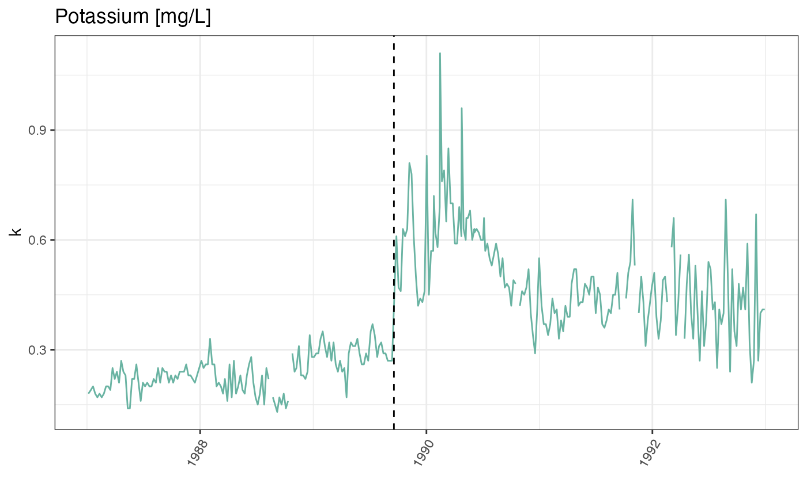

luq_streamchem - Stream chemistry, Luquillo Mountains of Puerto Rico (LUQ)
Impact of hurricane Hugo on stream chemistry for Quebrada Sonadora site
Source:vignettes/articles/luq_streamchem_vignette.Rmd
luq_streamchem_vignette.RmdIntroduction
This vignette highlights:
- How to explore change points in time-series
- How to use long format to create facet plots
The luq_streamchem data sample contains a subset of
stream flow chemistry data for the Quebrada Sonadora (QS) site within
the Espiritu Santo drainage basin and the El Verde Research area of the
Luquillo Experimental Forest (LEF). The Luquillo Experimental Forest
(LEF) has been a center of tropical forestry research for nearly a
century. In addition, the LEF is a recreation site for over a half a
million people per year, a water supply for approximately 20% of Puerto
Rico’s population, a regional center for electronic communication, and a
refuge of Caribbean biodiversity. QS is the high elevation site.

Exploring the time-series
## ── Attaching core tidyverse packages ──────────────────────── tidyverse 2.0.0 ──
## ✔ dplyr 1.1.2 ✔ readr 2.1.4
## ✔ forcats 1.0.0 ✔ stringr 1.5.0
## ✔ ggplot2 3.4.2 ✔ tibble 3.2.1
## ✔ lubridate 1.9.2 ✔ tidyr 1.3.0
## ✔ purrr 1.0.2
## ── Conflicts ────────────────────────────────────────── tidyverse_conflicts() ──
## ✖ dplyr::filter() masks stats::filter()
## ✖ dplyr::lag() masks stats::lag()
## ℹ Use the conflicted package (<http://conflicted.r-lib.org/>) to force all conflicts to become errorsIce Cover Duration Data
glimpse(luq_streamchem)## Rows: 317
## Columns: 22
## $ sample_id <chr> "QS", "QS", "QS", "QS", "QS", "QS", "QS", "QS", "QS", "QS"…
## $ sample_date <date> 1987-01-05, 1987-01-13, 1987-01-20, 1987-01-27, 1987-02-0…
## $ gage_ht <dbl> 2.82, 2.66, 2.61, 2.58, 2.80, 2.63, 2.84, 2.68, 2.76, 2.64…
## $ temp <dbl> 20, 20, 20, 20, 20, 20, 20, 19, 20, 20, 19, 21, 20, 21, 21…
## $ p_h <dbl> 7.22, 7.34, 7.12, 7.19, 7.36, 7.19, NA, 6.93, 7.02, 7.17, …
## $ cond <dbl> 48.2, 49.8, 50.3, 50.4, 49.6, 53.3, 43.7, 48.4, 48.4, 49.9…
## $ cl <dbl> 7.30, 7.50, 7.50, 7.30, 7.30, 7.20, 7.00, 7.30, 7.60, 7.30…
## $ no3_n <dbl> 97, 114, 115, 117, 103, 110, 94, 90, 86, 97, 218, 71, 83, …
## $ so4_s <dbl> 0.52, 0.73, NA, NA, 0.85, NA, NA, NA, NA, NA, NA, NA, NA, …
## $ na <dbl> 4.75, 4.81, 5.19, 5.08, 4.86, 5.11, 4.80, 5.08, 4.90, 4.89…
## $ k <dbl> 0.18, 0.19, 0.20, 0.18, 0.17, 0.18, 0.17, 0.18, 0.20, 0.20…
## $ mg <dbl> 1.50, 1.58, 1.66, 1.64, 1.49, 1.59, 1.44, 1.60, 1.64, 1.51…
## $ ca <dbl> 2.46, 6.53, 2.60, 2.67, 2.39, 2.55, 2.33, 2.48, 2.55, 2.81…
## $ nh4_n <dbl> 14, 20, 25, 30, 25, 30, 7, 6, NA, NA, NA, NA, NA, NA, 7, 1…
## $ po4_p <dbl> NA, NA, NA, NA, NA, NA, NA, NA, NA, NA, NA, NA, NA, NA, NA…
## $ doc <dbl> 0.72, 0.74, 0.69, 0.62, 0.75, 0.61, 1.78, 1.85, 1.49, 1.29…
## $ dic <dbl> 3.37, 3.35, 4.42, 3.30, 5.03, 4.18, 2.40, 2.90, 2.46, 3.34…
## $ tdn <dbl> NA, NA, NA, NA, NA, NA, NA, NA, NA, NA, NA, NA, NA, NA, NA…
## $ tdp <dbl> NA, NA, NA, NA, NA, NA, NA, NA, NA, NA, NA, NA, NA, NA, NA…
## $ si_o2 <dbl> 11.8, 12.2, 12.5, 12.4, 10.9, 12.2, 11.1, 12.5, 11.8, 12.3…
## $ don <dbl> NA, NA, NA, NA, NA, NA, NA, NA, NA, NA, NA, NA, NA, NA, NA…
## $ tss <dbl> 2.30, 0.72, 1.05, 1.05, 1.60, 1.32, 1.23, 1.18, 1.20, 0.96…Plotting one chemical
Let’s start with looking at the time-series of potassium
ggplot(data=luq_streamchem, aes(x=sample_date, y=k)) +
geom_line(color="#69b3a2") +
xlab("") +
theme_bw() +
theme(axis.text.x=element_text(angle=60, hjust=1)) +
labs(title = "Potassium [mg/L]") 
Wow there is definitely something going on at the end of 1989!
Plotting all water quality indicators
We are not sure if all the chemicals and water quality indicators
have been monitored over the same time period, or if their value will
also show strong variations at the end of 1989. To explore this we will
transform our data frame into long format so we can use
ggplot2::facet_wrap() to quickly plot all observed stream
chemistry variables at once. Note we are using the
scales = free option since the concentrations (and units)
vary greatly among the different variables.
# Switching to long format
luq_streamchem_long <- luq_streamchem %>%
pivot_longer(cols = -c(sample_id, sample_date), names_to = "chem_param")
ggplot(luq_streamchem_long, aes(sample_date, value)) +
geom_line(color="#69b3a2") +
facet_wrap(vars(chem_param), scales = "free")It seems that other chemicals are also showing a jump around the end of 1989. Actually those jumps are due to Hurricane Hugo which made landfall in Puerto Rico at the beginning of September 1989. In its aftermath, average stream water exports of potassium, nitrate and ammonium increased in the year after the landfall by 119, 182 and 102% respectively compared to the other years of record.
Detecting change points in a time-series
Let’s first confirm that the timing of the jump in the time-series corresponds to Hurricane Hugo by adding a vertical line at the date of hurricane landfall.
ggplot(luq_streamchem, aes(x=sample_date, y=k)) +
geom_line(color="#69b3a2") +
geom_vline(xintercept = as.Date("1989-09-18"),
linetype = "dashed") +
xlab("") +
theme_bw() +
theme(axis.text.x=element_text(angle=60, hjust=1)) +
labs(title = "Potassium [mg/L]") 
What could be next
There are many R packages available to help to detect change points
in a time series: changepoint,
CPM,
BCP,
ECP
and more! Try to use them on this data sample.
References
Schaefer, D., McDowell, W., Scatena, F., & Asbury, C. (2000). Effects of hurricane disturbance on stream water concentrations and fluxes in eight tropical forest watersheds of the Luquillo Experimental Forest, Puerto Rico. Journal of Tropical Ecology, 16(2), 189-207. doi:10.1017/S0266467400001358
McDowell, W. 2021. Chemistry of stream water from the Luquillo Mountains ver 4923056. Environmental Data Initiative. https://doi.org/10.6073/pasta/0a09f5aa2e6f11451553c92b102279a6 (Accessed 2022-03-10)
Killick, R., & Eckley, I. A. (2014). changepoint: An R Package for Changepoint Analysis. Journal of Statistical Software, 58(3), 1–19. https://doi.org/10.18637/jss.v058.i03
How we processed the raw data
Download the raw data from EDI.org
library(tidyverse)
library(lubridate)
library(usethis)
library(metajam)
library(janitor)
# Chemistry of stream water from the Luquillo Mountains
# McDowell, W. 2021. Chemistry of stream water from the Luquillo Mountains ver 4923053.
# Environmental Data Initiative. https://doi.org/10.6073/pasta/c6c35d45f7b25baac164acf42a40e95e (Accessed 2021-09-24).
luq_url <- "https://portal.edirepository.org/nis/dataviewer?packageid=knb-lter-luq.20.4923053&entityid=a05bda0a0af888cc037ff5dd00dafd7e"
stream_chem_path <- download_d1_data(data_url = luq_url, path = tempdir())Filter the Data
We want to analyze the effect of hurricane Hugo which made landfall in September 1989. We are going to use the period from 1985 to 1994.
# Read that data
# View(stream_chem$attribute_metadata)
# -9999 is stated a no value in the metadata
stream_chem <- read_d1_files(stream_chem_path)
luq_stream_chem_data <- stream_chem$data
# Filter from 1987 to 1992
luq_streamchem <- luq_stream_chem_data %>%
filter(year(Sample_Date) > 1986 & year(Sample_Date) < 1993) %>%
select(-Sample_Time, -ends_with("Code")) %>% # remove unwated columns
clean_names()